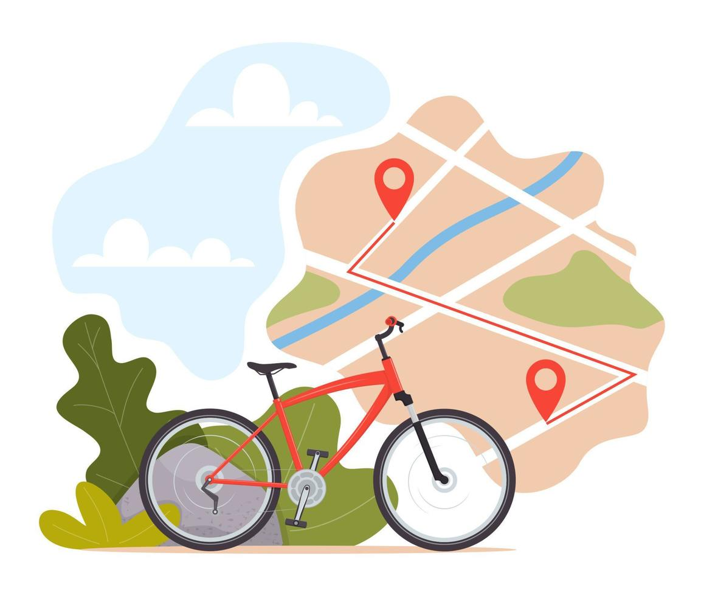
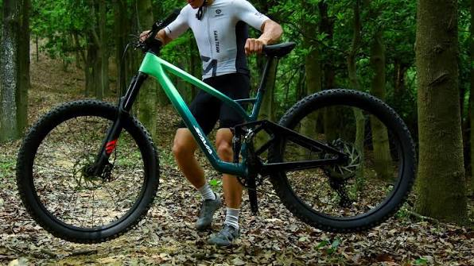
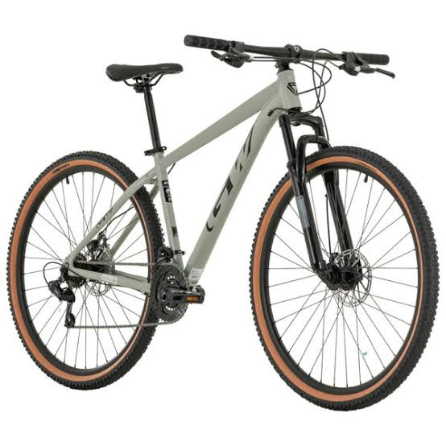
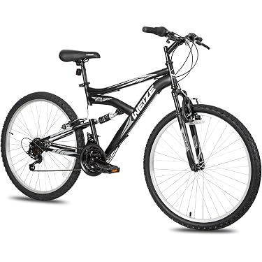
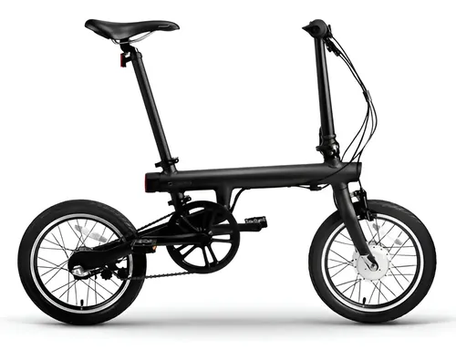

Alquiler de bicicletas
Tenemos bicicletas urbanas y de montaña para todas las edades. El alquiler incluye casco y candado, y puedes reservar por horas o por el día completo. Si es tu primera vez, te damos una breve explicación antes de salir.
Bienvenido a Rueda Libre. Alquilamos bicicletas y organizamos recorridos guiados para que conozcas Medellín sobre ruedas.
Rueda Libre es un emprendimiento de Medellín que alquila bicicletas y organiza recorridos guiados por la ciudad. Nacimos para que locales y visitantes conozcan Medellín sobre ruedas, a su ritmo y con seguridad.
Tenemos bicicletas urbanas y de montaña para todas las edades. El alquiler incluye casco y candado, y puedes reservar por horas o por el día completo. Si es tu primera vez, te damos una breve explicación antes de salir.

Un guía local te acompaña por los lugares más interesantes de la ciudad, con paradas para tomar fotos y probar comida típica. Los grupos son pequeños y los recorridos duran entre dos y tres horas. Consulta precios y duración de los recorridos.

Si tu bicicleta necesita ajustes, en nuestro taller revisamos frenos, cambios y llantas. Es un servicio rápido para arreglos sencillos, ideal antes de un paseo largo.

Ahora también alquilamos bicicletas eléctricas para que recorras la ciudad con ayuda del motor. Puedes elegirlas en el formulario de reservas.
Contamos con una variedad de bicicletas para satisfacer tus necesidades. Nuestra flota está compuesta por bicicletas urbanas, de montaña y eléctricas, todas en perfecto estado y listas para que disfrutes de tu paseo.

Se dobla en segundos; ideal para combinar con el metro.
Precio: $12,000 por día
Reservar
Suspensión delantera y 21 cambios para las subidas.
Precio: $15,000 por día
Reservar
Bicicleta ideal para desplazamientos de grava y terrenos irregulares.
Precio: $18,000 por día
Reservar
Asistencia eléctrica con 45 km de autonomía.
Precio: $25,000 por día
ReservarAlquilar con nosotros es fácil. Pasa por nuestro local, que encuentras en la sección Encuéntranos, y sigue estos pasos.
Tres beneficios de alquilar con nosotros:
Estamos en el centro de Medellín. Mira nuestra ubicación en el mapa o escríbenos a hola@ruedalibre.